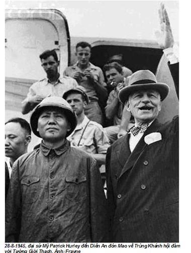
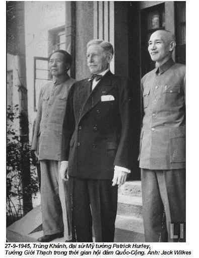
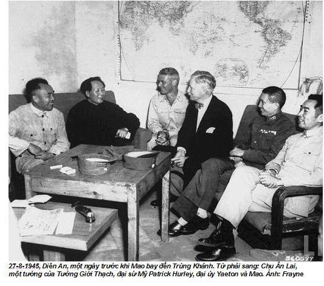

Chương 12

hỉ khi cùng vi hành với Mao, tôi mới biết người ta đã sửa soạn cho những chuyến đi của ông như thế nào. Sự an toàn và sức khỏe được đặt lên hàng đầu, đồng thời ông phải cảm thấy thoải mái và hứng thú cũng là điều rất quan trọng không kém. Tôi biết Mao được bảo vệ rất cẩn mật bằng các biện pháp an ninh đa dạng, nhưng những biện pháp đó ở Trung Nam Hải dần dần trở nên quá nhàm, đến nỗi hầu như tôi không để ý đến nữa. Chỉ trong các chuyến đi công du, các biện pháp bảo vệ đặc biệt đó mới lại bộc lộ.
Mao thường hay đi đây đó, ít khi sống một thời gian dài ở Bắc Kinh. Tại “thủ phủ ở phía Bắc này”, ông cảm thấy như không phải nơi ở của mình. Ông thích về miền nam hơn, nơi chôn nhau cắt rốn, thích lưu lại những thành phố như Quảng Châu, Hàng Châu, Thượng Hải và Vũ Hán. Ông thường ở lại những nơi đó hàng tháng trời và miễn cưỡng trở về Bắc Kinh vào các ngày lễ 1-5 hay ngày Quốc khánh, hoặc để tiếp khách nước ngoài. Khi đi công lý, Mao cũng có những sở thích riêng. Nếu ông quyết định đi Hàng Châu vào buổi sáng, thường thường chúng tôi phải lên đường vào chiều hôm trước. Ngay những người tháp tùng cũng không được thông báo chính xác nơi đến của cuộc hành trình, dù kế hoạch đã định từ lâu nhưng người ta chỉ báo cho chúng tôi từ chiều hôm trước, vì lực lượng an ninh sợ chuyến đi có thể bị tiết lộ. Bởi vậy, rất ít khi chúng tôi có quá một hay hai ngày để chuẩn bị.
Mao thường công du bằng một đoàn tàu hoả của riêng, có mười một toa khang trang, lịch sự. Đoàn tàu để trong một khu nhà đặc biệt, cách xa ga chính của thành phố Bắc Kỉnh. Mao và Giang Thanh có toa riêng, mặc dù Giang Thanh chỉ một lần duy nhất cùng đi với chúng tôi. Toa thứ ba của đoàn tàu được dùng làm phòng ăn và nhà bếp. Trong toa sang trọng của Mao có một chiếc giường gỗ đồ sộ, một giá sách lớn chiếm mất khá nhiều chỗ.
Bốn toa ngủ có giường tầng được dành cho đám vệ sĩ, vốn là nhân viên an ninh của cơ quan trung ương, cho nhân viên trên tàu và ban tham mưu của Mao gồm thợ chụp ảnh, phục vụ và đầu bếp. Tất cả họ dùng một toa ăn riêng. Một toa khác chứa dụng cụ y tế dành cho trường hợp cấp cứu và có thêm một toa dự phòng nữa.
Thứ duy nhất mà đoàn tàu còn thiếu là máy điều hoà nhiệt độ, đến nỗi vào mùa hè trong tàu nóng như thiêu như đốt. Tuy nhiên, vào đầu những năm 60 Mao đã nhận được một đoàn tàu mới của Đông Đức tặng. Đoàn tàu được trang bị đầy đủ tiện nghi với hệ thống chiếu sáng gián tiếp, với những máy móc hiện đại nhất và tất nhiên còn có cả hệ thống điều hoà nhiệt độ. Uông Đông Hưng, Lâm Khắc, thư ký riêng của Mao và tôi có một toa riêng có buồng ở. Trong những căn buồng rộng, rất tiện lợi được kèm thêm một chiếc bàn và một chiếc giường, trong buồng tắm có hệ thống nước nóng.
Những biện pháp an ninh trên đường cũng rất khác thường. Khi đoàn tàu chạy, tất cả các hoạt động giao thông trên tuyến đường sắt đó đều bị đình trệ, làm đảo lộn cả các lịch trình giao thông trong suốt một tuần lễ cho đến khi mọi việc trở lại bình thường. Những nhà ga thường đông hành khách và người bán hàng rong bị nhân viên an ninh trấn dẹp. Thật rờn rợn khi vào những sân ga vắng ngắt, trên những thềm xe lửa đậu chỉ thấy lính canh. Khi một cộng sự khác và tôi cho Uông Đông Hưng biết thiếu người bán hàng rong, ông ta liền cho một vài nhân viên an ninh đóng giả người bán hàng rong, làm cho quang cảnh có vẻ tự nhiên hơn.
Tỉnh nào đoàn tàu của Mao đi qua, tỉnh đó phải chịu trách nhiệm bảo vệ an ninh, phải chuẩn bị sẵn một người lái tầu và một đầu tàu. Ngoài ra, cùng với những nhân viên an ninh của Bắc Kinh ngồi trong tàu và có mặt ở những điểm dừng, còn có một vài trăm lính do các Ban an ninh của các tỉnh bố trí trên suốt chặng đường, cứ năm chục mét có một người gác. Có lần tôi nói chuyện với trưởng Ban an ninh của địa phương nằm trên tuyến đường sắt giữa Bắc Kinh và Mãn Châu Lý, một thành phố ở biên giới giữa vùng Mãn Châu và Liên Xô, người có nhiệm vụ canh gác khi Mao từ Moscow trở về vào năm 1950. Giữa mùa đông tháng giá, trong suốt hai tuần lễ, những người lính đã bảo vệ tuyến đường sắt dài hàng trăm cây số này phải có mặt thường trực từng giờ từng phút. Cũng trong suốt hai tuần lễ, người nói chuyện với tôi đã phải chui rúc trong một đường hào trên tuyến đường sắt đó để đợi tàu. Mọi người đều biết, trong đoàn tàu có một số quan chức cao cấp, nhưng mãi về sau người ta mới biết chính là Mao.
Mao đi chẳng theo lịch trình nào, bởi vì tàu chỉ chuyển bánh khi Chủ tịch thức, chừng nào ông còn ngủ đoàn tàu còn đứng yên. Bởi vậy, chằng thể biết khi nào tàu chạy, hệt như giấc ngủ của Mao vậy. Khi ông ngủ, đoàn tàu dừng lại tại ga phụ của một sân bay quân sự, hay một ga để dồn toa hoặc tại ga phụ của một nhà máy đã được dọn dẹp trước khi ông đến. Như thế cũng là để dễ bảo vệ Mao hơn.
Đôi khi Mao lại đi máy bay. Tôi đi bằng máy bay cùng với ông lần đầu vào mùa hè năm 1956. Sau đó ông giành mùa đông để viết cuốn sách “Chủ nghĩa xã hội nở rộ trên đồng quê Trung Hoa”. Ông đã đến thăm Hàng Châu và Thượng Hải, tìm cách đẩy mạnh kế hoạch tập thể hoá nông nghiệp cấp tốc của ông. Vì thế ông muốn đi đến đó bằng máy bay, chủ yếu để thu thập kinh nghiệm như ông đã nói. Trước đó Mao mới đi máy bay một lần. Tháng 8-1945, một chiếc máy bay của Mỹ đã chở ông cùng với đại sứ Mỹ, Patrick Hurley, từ Diên An đến Trùng Khánh, nơi ông tham dự cuộc đàm phán gian nan giữa những người cộng sản và những người quốc gia, nhằm ngăn ngừa cuộc nội chiến bùng nổ.



Tất cả những người có trách nhiệm đều lưu tâm đến việc bảo vệ an ninh cho Mao trong chuyến bay. Những biện pháp an ninh đặc biệt tỉ mỉ được thực hiện. La Thuỵ Khanh, bộ trưởng công an đã làm việc trực tiếp với tư lệnh không quân, tướng Lưu Nha Lâu để bay thử và trang bị thêm cho chiếc máy bay kiểu Li-2 của Liên Xô, trở thành chiếc máy bay an toàn nhất.
Buổi sáng, tướng Lưu Mao và cấp phó của ông cùng đi với chúng tôi đến sân bay quân sự Tây Uyển nằm rìa phía tây thành phố, cách không xa Cung điện Mùa hè. Trong khi có chuyến bay, giao thông đường không trên toàn đất nước Trung Quốc bị đình chỉ và những tốp máy bay chiến đấu kiểm soát toàn bộ không phận. La Thuỵ Khanh, Dương Thượng Côn, Uông Đông Hưng và một loạt bí thư, thư ký, nhân viên an ninh và cần vụ đã bay trước trên một chiếc máy bay khác của Liên Xô, Il-14. Cả hai người lái xe, người đầu bếp, thợ chụp ảnh, hai “chuyên gia về thực phẩm” và những nhân viên an ninh bay trên hai máy bay khác. Những thành viên khác của ban tham mưu tổng cộng 200 người, đi cùng với xe của Mao – một loại xe limousine ZiC sang trọng của Liên Xô, vỏ bọc thép chống đạn được sản xuất riêng cho ông, đã được một đoàn tàu đặc biệt đưa đến trước. Chiếc xe này chở Mao từ sân bay về biệt thự ở Quảng Châu. Đoàn tàu được để trong một gian phòng lớn tại sân bay Bạch Vân đề phòng trong trường hợp Mao muốn tiếp tục cuộc hành trình bằng tàu hoả.
Máy bay của Mao nhỏ, chỉ có một cánh quạt. 24 ghế ngồi đã được gỡ bỏ và toàn bộ bên trong khoang được bố trí lại. Trong phần phía trước của máy bay, người ta lắp một chiếc giường, một chiếc bàn nhỏ và hai chiếc ghế cho Chủ tịch. Còn phía sau có bốn chiếc ghế dành cho những người tháp tùng, gồm hai vệ sĩ, một thư ký riêng và tôi.
Phi công chính là viên tư lệnh không quân, đại tá Hồ Bình. Khi chúng tôi lên máy bay, Mao chào tư lệnh Hồ:
- Trong chuyến bay này tôi đã làm phiền đồng chí – Ông tỏ ra ôn tồn để đại tá Hồ yên tâm.
- Thật là một vinh dự lớn lao, thật hạnh phúc đối với tôi khi được phép bay cùng với Chủ tịch – Hồ Bình trả lời.
Tôi nhận thấy ngay, giữa những lời nịnh hót được Mao chấp nhận và sự thăng quan tiến chức mau chóng của kẻ xu nịnh có một sự liên quan trực tiếp. Trong khi diễn ra cuộc Cách mạng văn hoá, Hồ Bình đã được thăng cấp tướng và làm Tổng tham mưu trưởng không quân. Tuy vậy, năm 1971, ông bị tống giam vì đã dính líu vào âm mưu tạo phản của Lâm Bưu. Thế là tất cả những công trạng phục vụ Chủ tịch của ông đều bị xoá sạch.
Chuyến bay được chia thành hai chặng. Trong khi bay, chúng tôi học tiếng Anh. Đến gần trưa đáp xuống Vũ Hán, được các quan chức địa phương đón tiếp, trong đó có bí thư thứ nhất tỉnh uỷ Vương Nhậm Trọng và cán bộ lãnh đạo đảng của tỉnh Vũ Hán là Lưu Khắc Nông, người đã tổ chức bữa đại tiệc đón chúng tôi trong một nhà khách tráng lệ, trước kia là biệt thự của Tưởng Giới Thạch. Toà biệt thự này nằm trong vùng nghỉ mát đẹp như tranh bao quanh một cái hồ ở phía Đông, đối diện với trường Đại học Vũ Hán. Những người phục vụ vui vẻ và ân cần. Họ được đào tạo trong các khách sạn của Anh và Pháp, mà trước năm 1949 chúng là một nét đặc sắc của Vũ Hán. Giống cá chép bạc của Ô Giang, một món ăn tuyệt ngon mà Mao rất ưa thích.
Trong chuyến đi, đâu đâu tôi cũng có dịp chứng kiến việc Mao được xu nịnh thế nào. Trong việc này, Vương Nhậm Trọng tỏ ra khá xuất sắc. Ông ta khẳng định:
- Người ta không thể đơn giản so sánh Stalin với Chủ tịch. Stalin đã giết quá nhiều người. Ngược lại, đảng ta không chỉ khoan hồng kẻ đối lập với đảng như Vương Minh, thậm chí đảng còn cố gắng lôi kéo ông ta vào một khối đoàn kết.
Mao vui vẻ đáp lại:
- Tất nhiên, chúng ta phải phân biệt giữa mâu thuẫn nội bộ và mâu thuẫn đối kháng. Đề giải quyết những mâu thuẫn trong dân chúng, chúng ta không được phép bắt hoặc thủ tiêu một cách tuỳ tiện như thế được.
Vương nói:
- Nhưng điều đó chỉ có thể thực hiện được dưới sự lãnh đạo của Chủ tịch.
Và tôi có cảm tưởng, lời tâng bốc của ông đã được tính toán kỹ. Cho đến khi nổ ra cuộc Cách mạng văn hoá, ngôi sao chính trị của Vương không ngừng lên cao. Khi cuộc Cách mạng bắt đầu, ông trở thành một trong những phó chỉ huy của Cách mạng và ông bị thất sủng sau khi ông xúc phạm đến Giang Thanh, sau khi công khai diễn thuyết mà chưa được sự đồng ý.
Gần 6 giờ tối, chúng tôi hạ cánh xuống sân bay Bạch Vân ở thành phố Quảng Châu. Tại đây đã diễn ra cuộc đón tiếp không kém phần xúc động. Bí thư thứ nhất tỉnh uỷ tỉnh Quảng Đông, Đào Chú, đã đến và người lãnh đạo chính quyền của tỉnh Trần Dư cũng có mặt. Trong khi xe chạy, tôi nhìn lướt qua cửa kính xe limousine, lần đầu tiên xem quanh cảnh thành phố Quảng Châu. Tôi sửng sốt về sự bẩn thỉu và sự ồn ào ở đó. Rác rưởi tràn ngập khắp nơi, nước cống chảy lênh láng trên đường phố. Sự ồn ào xô bồ hỗn tạp bởi những bài hát tiếng Quảng Đông hoà với tiếng guốc gỗ gõ lọc cọc trên vỉa hè.
Chuyến vi hành của Mao tại Quảng Châu được giữ tuyệt mật. Các thành viên tham mưu thuộc Nhóm Một hoàn toàn bị cắt đứt liên lạc với thế giới bên ngoài. Chúng tôi không những không được phép rời khỏi vị trí, còn không được gọi điện thoại, không được tiếp khách hay nhận thư từ. Thư của chúng tôi viết về nhà được một người đưa thư đặc biệt chuyển đi. Mấy ngày trước khi lên đường, Uông Đông Hưng phái chúng tôi đi thị sát. Chuyến đi này do những nhân viên Ban an ninh tỉnh Quảng Đông chỉ đạo.
Vấn đề đảm bảo an toàn cho Mao được đặt lên hàng đầu, sau đó mới là làm sao để ông thật thoải mái.
Sau khi giải phóng Bắc Kinh ít lâu, đã trở thành lệ, người ta tịch thu những biệt thự trước đây hoặc xây mới những biệt thự khác cho giới lãnh đạo cao cấp nhất của đảng. Lúc đó, Dương Thượng Côn và Văn phòng trung ương đã cho xây trên đồi Ngọc Thạch Xuân gần Đồi Hương năm biệt thự cho năm nhân vật lãnh đạo cao nhất gồm Mao, Lưu Thiếu Kỳ, Chu Ân Lai, Chu Đức và Nhậm Bích Thế. Theo lời của cả hai vệ sĩ không biết bơi của Mao là La Thuỵ Khanh và Uông Đông Hưng, người ta đã xây một bể bơi cho Mao. Bởi vì đối với họ, sự an toàn của Mao trên hết, nên họ đã quyết định chiều dài của bể bơi chỉ bằng hai lần chiều dài của bồn tắm và nước chỉ sâu đến đầu gối.
Mao nổi giận lôi đình về cái bể bơi vô tích sự, như thứ đồ chơi trẻ con. Cơn thịnh nộ của ông càng bùng lên dữ dội khi đúng dịp phiên họp Bộ chính trị, ông Bành Đức Hoài vốn cứng rắn, đã phản đối Mao xài tiền của nhà nước để hưởng thụ cá nhân. Mao đã bồi hoàn cho nhà nước những chi phí xây bể bơi, nhưng ông không bao giờ đến biệt thự này.
Những biệt thự và bể bơi ở Bắc Đới Hà cũng được xung công hoặc được xây mới. Vào năm 1950, Dương Thượng Côn đã tịch thu những ngôi nhà ở đó, phân cho tất cả các chính trị gia cao cấp mỗi người một biệt thự. Người ta đã xây cho Mao một nhà mới đặc biệt, được gọi khu nhà 8.
Sau đó, biệt thự bắt đầu được xây ở các tỉnh và các vị lãnh đạo tỉnh đua nhau xây biệt thự theo kiểu nhà Mao.
Người ta đã sai lầm. Ai cũng cho rằng, hiện đại là tốt nhất, nên nhiều vị lãnh đạo đảng đã cho bày trong nội thất những chiếc đệm mút và xây hố xí bệt theo kiểu phương Tây. Nhưng đi đâu Mao cũng thường đưa theo chiếc giường bằng gỗ cứng và ông dùng bô. Thậm chí, khi sang Moscow vào năm 1949, ông cũng đưa theo giường riêng và trong chuyến viếng thăm Moscow năm 1957 ông đã sử dụng bô vệ sinh bởi vì trong điện Kreml chỉ có hố xí bệt.
Đào Chú, người đầu tiên đã cho xây một ngôi biệt thự mới và sang trọng cho Mao và Giang Thanh. Trong việc này ông đã phạm ít sai lầm hơn người khác. Vì thế Mao rất thích lưu lại ở Quảng Châu.
Nhà khách Tiểu Đảo, nơi chúng tôi lưu lại là một biệt thự tổng hợp, nằm trên một hòn đảo nhỏ, bao quanh đảo là hai nhánh của dòng Châu Giang. Trong vườn đầy hoa thơm chuối ngọt và những giống cây nhiệt đới.
Ba ngôi nhà ở trên hòn đảo đó được dành cho Mao. Một trong ba ngôi nhà trước đây là nhà nghỉ của bác sĩ Tôn Trung Sơn, nhưng vì Đào Chú chê nó quá nhỏ nên ông đã cho xây thêm một ngôi nhà khác mang số 1. Giữa phòng ngủ của Mao và Giang Thanh riêng biệt có một phòng họp lớn, trong đó người ta có thể xem phim. Trong ngôi nhà thứ ba, sau này người ta đã xây một bể bơi với kích thước của thế vận hội, ở đó người ta có thể giải trí, đọc sách và ăn uống. Những biệt thự số 4, 5 và 6 bình thường dành cho Lưu Thiếu Kỳ, Chu Ân Lai và Chu Đức, nhưng tháng 6-1956, La Thuỵ Khanh, Dương Thượng Côn, Uông Đông Hưng và tôi đã được thu xếp đến ở.
Tại thành phố Quảng Châu, những biện pháp an ninh cần nghiêm ngặt hơn, vì Đào Chú, La Thuỵ Khanh và lực lượng an ninh lo ngại kẻ địch từ Hong Kong có thể thâm nhập vào. Họ biết, trong lãnh thổ thuộc địa của Anh cách đó khoảng 150 cây số có vô số đặc vụ của Quốc dân đảng và những phần tử phản động lăm le muốn ám sát Chủ tịch. Trên khắp hòn đảo đều có những người lính có vũ trang của đơn vị bảo vệ trung ương canh gác. Các phương tiện giao thông đường sông đều bị đình chỉ và những chiếc tàu tuần tiễu luôn rẽ sóng canh chừng những khả năng đột nhập. Trên đảo cực kỳ tĩnh mịch, chỉ còn nghe thấy tiếng hót của những con chim vùng nhiệt đới.
Bộ phận bảo vệ trung ương của Uông Đông Hưng đã phái toàn bộ một đơn vị đến Quảng Châu, chỉ riêng đoàn tuỳ tùng của Mao từ Bắc Kinh đến đã có tới 200 người. Thông thường, cứ từ 8 đến 10 người ở trong một căn phòng của toà nhà của Ban an ninh tỉnh Quảng Đông nằm ở đầu cầu nối hòn đảo với đất liền. Các nhân viên của Ban an ninh tỉnh Quảng Đông, của nhà khách trên đảo đã không thu xếp nổi nơi ăn chốn ở cho chừng đó con người. Ngược lại, nhà bếp dành riêng cho Mao lại được trang bị rất tốt, hợp vệ sinh không chê vào đâu được, sao cho không xảy ra những vấn đề về sức khỏe và tổ chức. Thực phẩm của Chủ tịch hàng ngày được chở đến bằng máy bay từ công xã Tụ Sơn ở Bắc Kinh, được đầu bếp của ông chế biến. Mao thường thưởng thức các loại trái cây hảo hạng, dùng rau và cá vùng Quảng Đông, nhưng ông thường rưới thêm dầu ăn cùng với nhiều gia vị cay của tỉnh Hồ Nam.
Việc cung cấp thực phẩm cho lực lượng an ninh, cả một vấn đề. Vì không có tủ lạnh và thực phẩm dành cho 200 con người phải để ngoài trời nóng, nên rất dễ có nguy cơ ngộ độc thực phẩm. Việc xử lý rác thải cũng khó khăn không kém, đã thu hút lũ chuột cống và chuột nhắt kéo đến.
Uông Đông Hưng đã điều nhân viên nhà bếp ở Quảng Châu một số cộng sự từ Bắc Kinh đến để giúp việc, chăm lo việc vệ sinh cũng như việc cung ứng, bảo quản thực phẩm. Còn tôi chịu trách nhiệm bao quát chung những vấn đề y tế.
Mặc dù Uông Đông Hưng và La Thuỵ Khanh đã cố gắng hết sức để che đậy những khó khăn do ban tham mưu của lực lượng an ninh gây ra, nhưng Chủ tịch vẫn thấy. Ông vạch ra cho Uông Đông Hưng:
- Các anh canh gác khắp nơi cứ như các anh sẵn sàng đương đầu với đơn vị kẻ địch mạnh. Các anh tự làm khó cho mình vì không tin vào lãnh đạo địa phương và quần chúng.
Chính Mao lại không cảm thấy có nguy cơ bị ám hại như ban bảo vệ. Ông biết quần chúng ngưỡng mộ ông. Tại sao họ lại muốn làm cái gì đó đối với ông?
Sau khi chúng tôi đến ít lâu, Lưu Thiếu Kỳ, Chu Ân Lai, Chu Đức và Trần Vân cũng đến Quảng Châu, kéo theo cả các vị lãnh đạo đảng của tỉnh và các quan chức địa phương. Mao đã triệu tập một cuộc họp. Trong khi các quan chức chóp bu của đảng ở trong nhà khách trên đảo, tôi dọn sang ngôi nhà của Ban an ninh ở bên kia cầu. Các vị trong tỉnh uỷ và lãnh đạo địa phương được thu xếp ở trong các nhà khách khác, do thành đội Quảng Châu và Uỷ ban tỉnh Quảng Đông quản lý.
Đào Chú tổ chức một bữa tiệc chào mừng các vị khách mới đến, mời Mao làm khách danh dự. Đào Chú nói, đầu bếp Quảng Đông đã chuẩn bị những món đặc sản, hy vọng Mao sẽ thưởng thức các món ăn đặc sản. Song Mao đã không nhận những lời lẽ văn hoa lịch sự, ông từ chối. Uông Đông Hưng, Diệp Tử Long và tôi phải thay ông đến dự tiệc, rồi sau đó tôi phải báo cáo lại.
Trước khi khai tiệc một tiếng rưỡi, Điền Chu, trưởng phòng nhân sự của Cơ quan an ninh đến, đi về phía tôi. Các nhân viên hoá thực phẩm đã phát hiện ra trong thức ăn có thạch tín, ông ta tỏ ra đặc biệt lo ngại. Người ta đã phong toả nhà bếp, không một nhân viên nào được phép ra ngoài. Uông Đông Hưng yêu cầu tôi lập tức theo ông vào nhà bếp.
Bảy bàn dài các món ăn thịnh soạn chuẩn bị được dọn ra, chỉ đợi thực khách đến. Tôi đi vào phòng xét nghiệm cạnh nhà bếp, nơi có hai nhân viên hoá thực phẩm vừa từ Bắc Kinh đến đang kiểm nghiệm các loại đồ ăn cao cấp, cơm và thức uống. Sự căng thẳng làm cho họ toát cả mồ hôi, nhưng khi thấy tôi họ bớt lo và muốn nghe lời khuyên của tôi.
Một người tên Tô, Phó Ban công an tỉnh Quảng Đông, nói các nhân viên nhà bếp đã được kiểm tra lý lịch kỹ càng, không có vấn đề chính trị. Mặc dù vậy ông vẫn lo ngại. Ở Hong Kong có hàng nghìn gián điệp mà lại rất gần. Có lẽ một “phần tử xấu” nào đó đã đột nhập vào bỏ thuốc độc vào món ăn.
Điều hết sức kỳ lạ, chỉ có món nấu măng mới có chất thạch tín. Những đồ ăn khác đều không sao cả. Măng này lấy từ vườn của nhà khách. Tôi cho đào một ngọn măng tươi và mang đi kiểm nghiệm. Lại tìm thấy chất cyanide. Tôi theo xe đến ngay thư viện của Học viện y học Tôn Dật Tiên, ở cách nhà khách chỉ vài phút. Tại đó tôi mới biết, măng trong thiên nhiên có chứa một lượng rất nhỏ chất thạch tín, nhưng không gây nguy hiểm cho sức khỏe.
Đào Chú rất đỗi vui mừng. Ông ta mỉm cười bắt tay tôi, cám ơn luôn miệng và đề nghị nâng ly chúc sức khỏe tôi trong bữa tiệc.
Phó ban công an cũng cảm ơn tôi. Ông ta nói:
- Đồng chí làm chúng tôi rất vui. Cách đây vài phút, bí thư Đào còn bối rối, đe trừng phạt tôi và nhân viên của tôi. Nhưng bây giờ mọi việc đã rõ, bữa tiệc có thể bắt đầu đúng giờ. Không có đồng chí, có lẽ chúng tôi phải bó tay trước vấn đề hóc búa này mất.
Trong bữa tiệc, khi tôi đứng lên để cám ơn Đào Chú về lời chúc của ông, ông ta đến cạnh Uông Đông Hưng, nói một câu ngạn ngữ cổ của Trung Quốc: “Tướng nào, quân nấy”. Uông khoái chí với lời khen đó. Ông ta tự hào rằng, quyết định của ông tiến cử tôi làm bác sĩ riêng của Mao đã được công khai thừa nhận.
Ngay sau bữa tiệc, tôi đến gặp Mao. Ông đang nằm trên giường, đọc một cuốn sách về triều đại nhà Minh. Tôi kể về chất cyanide, ông đã đổ lỗi cho Liên Xô trong vụ lộn xộn này.
Ông lưu ý:
- Tôi không chấp nhận việc tiếp thu mọi thứ của nước ngoài mà không có phê phán.
Ý ông muốn nói, việc kiểm tra thực phẩm cũng như những biện pháp an ninh nhiều mặt đều xuất phát từ người anh cả của Trung Quốc. Ông nói tiếp:
- Bây giờ thức ăn không những được kiểm tra ở Bắc Kinh, còn được kiểm tra ở cả những nơi khác của đất nước. Việc này tạo ra những rắc rối vô lý. Đồng chí hãy bảo Uông Đông Hưng nên chấm dứt việc đó đi.
Uông Đông Hưng bực tức vì tôi đã nói với Mao, nhưng ông ta biết tôi có lý và phải thay đổi cách kiểm tra thực phẩm.
Nếu tôi không báo cáo, sẽ có người khác báo cáo, tôi bảo, mỗi lần gặp Chủ tịch, bao giờ ông cũng hỏi, “Có tin tức gì mới không?”, ông muốn biết những gì xảy ra với những người quanh ông. Nếu tin có thạch tín trong bữa tiệc, tôi không báo cáo, ông sẽ nổi giận, trút mọi lỗi lên tôi vì đã không báo cáo sớm.
Sau đó ít lâu, người ta thôi không dùng hai phòng xét nghiệm thực phẩm nữa, việc kiểm tra được thực hiện ở Bắc Kinh và cơ quan an ninh đã chuyển cho thành phố Bắc Kinh quản lý công xã Tụ Sơn. Tuy nhiên, việc thay đổi đó chỉ là hình thức. Phần lớn thực phẩm dành cho Mao vẫn tiếp tục được cung ứng từ công xã Tụ Sơn, mặc dù việc cung ứng đã được chỉ thị không chỉ lấy thực phẩm từ nơi đó, còn lấy từ những vùng khác.
Khi tôi báo cáo với Mao biết đã có sự thay đổi, ông cười:
- Tôi đã nói “học tập Liên Xô”, không phải chúng ta học ở Liên Xô kể cả cách người ta ỉa đái như thế nào, đúng không? Tôi không muốn chỉ học Liên Xô, tôi còn muốn học cả Mỹ nữa.